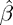
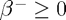
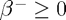
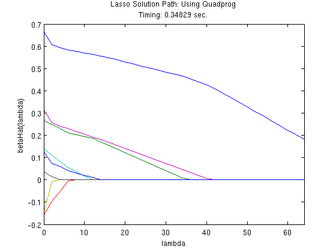
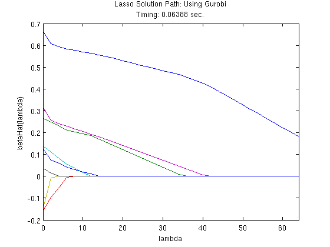

ST790 Advanced Computing Lab: Introduction to CVX
This file demonstrates how to use the modeling tool CVX to solve optimization problems, and also includes some examples of using MATLAB's and Gurobi's solvers directly. It was originally created by Brian Gaines for Eric Chi's ST790 Advanced Computing at NC State University. The companion slidedeck provides additional information on CVX. The code that generated this file is available (cvxDemo.m). Any comments or suggestions are welcome.
This file requires:
- MATLAB's Optimization Toolbox (if you are an NCSU student, you have this)
- The CVX toolbox for disciplined convex optimization (preferrably with the professional license)
- cvxDemo.mat data file in the working directory (or the load path will need to be changed)
- A stand-alone installation of the Gurobi solver is optional. If you do not have a stand-alone installation of Gurobi, please change the gurobiInstalled string to equal 'no' so the Gurobi-related code will be skipped.
Contents
Initial Setup
% clean up workspace clear; %######## Does this machine have a stand-alone Gurobi installation?? ########% % Answer 'yes' or 'no' gurobiInstalled = 'yes'; % load data load('cvxDemo')
Linear Programming Example: regression (least absolute deviations)
The first example is regression. As the name suggests, this is similar to the typical regression setup except that the norm is used for the loss function, so the objective function becomes
minimize
To solve this using a linear programming solver, we need to put it in the solver's standard form (which may differ slightly from the standard form Dr. Chi presented in class).
LP Example: Linprog
For MATLAB's lingprog function, we see that (from the online documentation or by the command "help linprog" in MATLAB) the problem's form is given by
minimize
subject to , , and .
Once we massage the problem into this form (I will do this on the board), then the corresponding function call is:
x = linprog(f, A, b, Aeq, beq, lb, ub, x0, options);
Not all of the inputs are required. For example, if we only have linear inequaltiy constraints, the function call becomes
x = linprog(f, A, b);
If some of the intermediate function inputs are not needed, they need to be replaced by two square brackets, []. So if we had linear equality constraints but no linear inequality constraints, the code is
x = linprog(f, [], [], Aeq, beq);
Anyway, after massaging the regression problem into this form, we can translate it to the code:
f = [zeros(p1, 1); ones(n1, 1)];
A = [X1 -speye(n1); -X1 -speye(n1)];
b = [y1; -y1];
, and
lb = [-inf(p1, 1); zeros(n1, 1)];
Now that all of the inputs are set, we can call lingprog to estimate the parameters, then extract the first parameters as those correspond to .
tic; % start timer thetaHatLP = linprog(f, A, b, [], [], lb); % estimate parameters toc; % run time betaHatLP = thetaHatLP(1:p1); % extract estimates for beta
Optimization terminated. Elapsed time is 0.522778 seconds.
LP Example: Gurobi
Please note that this requires a standalone installation of Gurobi, which is free for academic users but was not required for this lab. However, I do encourage the knowleddge of a commercial solver such as Gurobi or MOSEK (both of which are free for academic users, follow the links) as those are state-of-the-art solvers and more efficient than MATLAB's built-in solvers and the R equivalents that I'm aware of (both Gurobi and MOSEK are available in R).
As before, the first thing we need to do is become familiar with what the standard form looks like according to the solver. A quick view of this is available through Gurobi's online documentation, while the details are available in the actual reference manual (p. 433). The relevant parts for our purposes are
minimize
subject to and .
and the function call is
gurobi(model, params)
For Gurobi, the model argument is pieced together in a struct variable (which is essentially like a list in R) that contains different fields that correspond to the various parts of the optimization poblem. The field of a struct is referenced with a period, so the syntax is struct.field.
Here are a few notes on constructing the model, as the implementation is not as straightforward as linprog:
- is required (so a vector of zeros is used if it is not needed), and obj is its corresponding field (model.obj)
- is also required, and it must be a sparse matrix (using the sparse function). Even if you do not have any constraints in your model, is still required and has to be sparse (so simply using [] doesn't work). As we will see in the lasso example, I usually use sparse(zeros(0, p));, where is the dimension of the parameter vector/optimization variable, to create a sparse empty matrix.
- Linear inequality constraints are also possible, even though the standard form only has linear equality constraints. The sense field specifies the type of constraint, using either '=', '<', or '>'. A single value can be used when all of the constraints are the same, otherwise for mixed constraints there needs to be one value per row of . Since A is required, sense is also required.
- The field for is rhs. This is also required.
- The field for is lb. This is optional, but please note that the default lower bound is zero, and not , which can be accomplished by using -inf(p, 1).
- params is optional and can be used to specify options. A list of options is available on page 487 of the reference manual. I typically only set the field OutputFlag to
 to suppress the output.
to suppress the output. - x is the field in the output struct that has the solution. The solution includes several other output fields, detailed on p. 436 of the referencec manual.
Now that we have some background on gurobi, we can see it in action:
%# Model Setup #% % linear term gmodel.obj = [zeros(p1, 1); ones(n1, 1)]; % constraint matrix gmodel.A = [X1 -speye(n1); -X1 -speye(n1)]; % constraint type. Only one value needed since all constraints are inequality gmodel.sense = '<'; % b vector for constraints gmodel.rhs = [y1; -y1]; % lower bound (needed because default is zero) gmodel.lb = [-inf(p1, 1); zeros(n1, 1)]; % suppress output gparam.OutputFlag = 0; %# Model Estimation #% if strcmpi(gurobiInstalled, 'yes') tic; % start timer gresult = gurobi(gmodel, gparam); % estimate model toc; % run time betaHatGurobiLP = gresult.x(1:p1); % extract estimates for beta end
Elapsed time is 0.007671 seconds.
LP Example: CVX
While Gurobi and MOSEK are solvers, CVX is a modeling tool which provides a much more user-friendly interface for solving optimization problems using a variety of solvers, saving the hassle of needing to massage the problem into standard form or the hassle of having to learn each solver's syntax.
I will get into the details of CVX later, but for now, let's look at how we would solve the regression problem using CVX.
%# Model Estimation #% tic; % start timer cvx_begin quiet % initiate CVX, hiding output variable betaHatCVX_LP(p1); % declare optimization variable minimize( norm(y1 - X1*betaHatCVX_LP, 1) ); % define objective function cvx_end % declare end of CVX statements toc; % run time
As you can see, the syntax is much more straightforward and succinct, and essentially translates the original form of the problem directly to code without first having to massage it into an intermediate form for the sake of estimation. Here
%# Compare estimates #% % reduce the number of decimals displayed format short % display estimates if strcmpi(gurobiInstalled, 'yes') display([betaHatLP betaHatCVX_LP betaHatGurobiLP]) elseif strcmpi(gurobiInstalled, 'no') display([betaHatLP betaHatCVX_LP]) end
Elapsed time is 0.564291 seconds.
ans =
-0.5722 -0.5722 -0.5722
0.5249 0.5249 0.5249
0.6711 0.6711 0.6711
-0.0283 -0.0283 -0.0283
0.1598 0.1598 0.1598
0.8119 0.8119 0.8119
-0.1091 -0.1091 -0.1091
0.2011 0.2011 0.2011
0.0029 0.0029 0.0029
Quadratic Programming Example: Lasso Regression
Our second example involves the popular Lasso (Tibshirani, 1996), which introduces an penalty term on the regression coefficients in the objective function
minimize
where is a tuning parameter.
We will first optimize this directly using both MATLAB's solver (quadprog) and Gurobi, which will require us to first transform the problem into each solver's standard form.
QP Example: Quadprog
MATLAB's quadprog function naturally extends the lingprog function to include a quadratic term (documentation):
minimize
subject to , , and .
and the function call is also similar
x = quadprog(H, f, A, b, Aeq, beq, lb, ub, x0, options);
The key trick to reformulating our problem is to represent the parameter vector using its positive and negative parts, , as this allows us to deal with the absolute value in the penalty term, since . After expanding and rearranging the objective function to match quadprog's standard form, it should look like

subject to  , 
, 
so we can now translate this to code:
%# Model Setup #% % Quadratic matrix H gram = X2'*X2; H = [gram -gram; -gram gram]; % constraints lb2 = zeros(2*p2, 1); % constant part of linear coefficient f Xy2 = X2'*y2; f2p2 = [Xy2; -Xy2]; % suppress quadprog output options = optimset('Display', 'off'); %# Model Estimation #% % define grid of tuning parameters lambdas = (0:2:64); nLambda = length(lambdas); % matrix to store parameter estimates betaHatPathQP = NaN(p2, nLambda); % vector to store estimation time qpTimerPath = NaN(1, nLambda); % estimate model using quadprog, looping over lambdas for k = 1:nLambda % finish constructing f f2(1:2*p2, 1) = lambdas(k); f2 = f2 - f2p2; % estimate model using quadprog tic; thetaHatQP = quadprog(H, f2, [], [], [], [], lb2, [], [], options); qpTimer = toc; % back out estimates of beta betaHatPathQP(:, k) = thetaHatQP(1:p2) - thetaHatQP(p2+1:end); % store estimation time qpTimerPath(k) = qpTimer; end
QP Example: Gurobi
Gurobi's standard formulation already inludes a quadratic term,
minimize
subject to and ,
so we can proceed as before while also including the quadratic matrix, , which is required to be sparse.
%# Model Setup #% % quadratic matrix gram = X2'*X2; gmodel2.Q = sparse([gram -gram; -gram gram])/2; % constant part of linear term f Xy2 = X2'*y2;
Recall from above that and are required, even if they are not in our model, and that has to be a sparse matix (p. 433-4 of the reference manual). So we will create as a sparse, empty matrix and as an empty vector. Note that 's dimensions still need to be conformable, but can be a 0-by-1 vector.
% Constraint matrix. This is an empty matrix since it's not in our problem gmodel2.A = sparse(zeros(0, 2*p2)); % constraint type gmodel2.sense = '='; % right hand side of constraints (corresponds to b), also empty gmodel2.rhs = zeros(0, 1); % suppress gurobi output; gparam.OutputFlag = 0; %# Model Estimation #% if strcmpi(gurobiInstalled, 'yes') % matrix to store parameter estimates betaHatPathGurobi = NaN(p2, nLambda); % vector to store estimation time gurobiTimerPath = NaN(1, nLambda); % solve model, looping over lambdas for k = 1:nLambda % update linear coefficient gmodel2.obj = lambdas(k)*ones(2*p2, 1) - [Xy2; -Xy2]; % estimate model using Gurobi tic; gresult = gurobi(gmodel2, gparam); gurobiTimer = toc; % store estimated coefficients betaHatPathGurobi(:, k) = gresult.x(1:p2) - gresult.x(p2+1:end); % store estimation time gurobiTimerPath(k) = gurobiTimer; end end
QP Example: CVX
To solve the lasso in CVX, the implementation is again more straightforward as we can work directly the original formulation. The core part of the estimatin code is given by
cvx_begin quiet
variable betaHatCVX_QP(p);
minimize( 0.5*sum_square(y - X*betaHatCVX_QP) + ...
lambda*norm(betaHatCVX_QP, 1) );
cvx_endSo to solve the problem n a grid of  values, we can loop over this as
values, we can loop over this as
%# Model Estiation #% % matrix to store parameter estimates betaHatPathCVX = NaN(p2, nLambda); % vector to store estimation time cvxTimerPath = NaN(1, nLambda); % solve model, looping over lambdas for k = 1:nLambda % estimate model using CVX tic; cvx_begin quiet variable betaHatCVX_QP(p2); minimize( 0.5*sum_square(y2 - X2*betaHatCVX_QP) + ... lambdas(k)*norm(betaHatCVX_QP, 1) ); cvx_end cvxTimer = toc; % store estimated coefficients betaHatPathCVX(:, k) = betaHatCVX_QP; % store estimation time cvxTimerPath(k) = cvxTimer; end
%# Plot solutions #% % Quadprog figure; plot(lambdas, betaHatPathQP); title({'Lasso Solution Path: Using Quadprog', ... ['Timing: ' num2str(sum(qpTimerPath)) ' sec.'] }) xlabel('lambda'); ylabel('betaHat(lambda)'); xlim([min(lambdas), max(lambdas)]); % Gurobi if strcmpi(gurobiInstalled, 'yes') figure; plot(lambdas, betaHatPathGurobi); title({'Lasso Solution Path: Using Gurobi', ... ['Timing: ' num2str(sum(gurobiTimerPath)) ' sec.'] }) xlabel('lambda'); ylabel('betaHat(lambda)'); xlim([min(lambdas), max(lambdas)]); end % CVX figure; plot(lambdas, betaHatPathCVX); title({'Lasso Solution Path: Using CVX', ... ['Timing: ' num2str(sum(cvxTimerPath)) ' sec.'] }) xlabel('lambda'); ylabel('betaHat(lambda)'); xlim([min(lambdas), max(lambdas)]); 
Additional Example: 1-norm SVM
Here is an additional example of using CVX, this time for solving a 1-norm SVM (Zhu et al., 2004), which is given by
minimize ![$$\sum_{i = 1}^n \left[1 - y_i \left(\beta_0 + \sum_{j=1}^p x_{ij} \beta_j \right) \right]_+ $$](cvxDemo_eq69071.png)
subject to ,
where is a tuning parameter. This example involves a function, the hinge loss function, that is not already in the CVX function library. However, we can quickly define a new function for this purpose, and since it follows the DCP ruleset, CVX can identify it as being convex.
% define function handle for hinge loss
hingeLoss = @(x) sum(max(0, 1 - x));
With this in hand, the core part of the estimation code is
cvx_begin quiet
variable betaHatSVM(p3);
minimize( hingeLoss(y3.*(X3*betaHatSVM)) );
subject to;
norm(betaHatSVM(2:end), 1) <= tValues(k);
cvx_end%# Model Estiation #% % create tuning parameter grid tValues = (0:0.1:2.5); % number of tuning parameters to consider m = length(tValues); % matrix to store parameter estimates betaHatPath3 = NaN(p3, m); % vector to store estimation time svmTimerPath = NaN(1, m); % solve model, looping over lambdas for k = 1:m % estimate model using CVX tic; cvx_begin quiet variable betaHatSVM(p3); minimize( hingeLoss(y3.*(X3*betaHatSVM)) ); subject to; norm(betaHatSVM(2:end), 1) <= tValues(k); cvx_end % store estimation time svmTimerPath(k) = toc; % store estimated coefficients betaHatPath3(:, k) = betaHatSVM; end % #Plot solution path #% figure; plot(tValues, betaHatPath3(2:end, :)); title({'1-norm SVM Solution Path (without intercept)', ... ['Timing: ' num2str(sum(svmTimerPath)) ' sec.'] }) xlabel('t'); ylabel('betaHat(t)'); xlim([min(tValues), max(tValues)]);